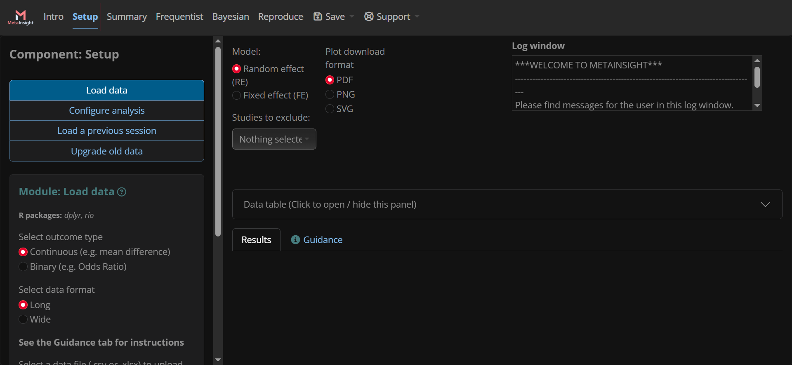

Developing in {shinyscholar}
1 Introduction
This document has been written to serve as a practical guide on how to develop new modules and components in a {shinyscholar} app. It covers the process of creating a new module in an existing component, or in a new component.
1.1 Modules vs Components

1.1.1 Components
A component is a set of operations and results which can be logically grouped together. The individual operations and results can be quite varied, but they come together to work towards a common purpose. In Figure 1 we see the “Setup” component, which contains operations related to preparing data and options for analysis. The full list of components in this app contains:
- Intro
- Gives the user an introduction to the app
- Setup
- Prepare data and options for analysis
- Summary
- Summarise the data
- Frequentist
- Run and evaluate a frequentist meta-analysis of the data
- Bayesian
- Run and evaluate a bayesian meta-analysis of the data
- Reproduce
- Download a reproducible version of the analysis that has been run
1.1.2 Modules
A module is an individual operation, and its outputs, within a component. This can be something simple such as selecting options, or it could be more involved, such as running an analysis and outputting some key findings. In Figure 1 we see the modules in the “Setup” component:
- Load data
- Configure analysis
- Load a previous session
- Upgrade old data
Each module has a well-defined function, but they are used together to setup the data and analysis options. Modules may use inputs from other modules and components via a “common” object.
1.2 Running the App After Making Changes
To run the app after making code changes, the following 3 commands should be run.
detach("package:metainsight", unload = TRUE)
devtools::install_local(path = getwd(), force = TRUE)
metainsight::run_metainsight()2 Creating a New Module
{shinyscholar} provides a helper function to create the skeleton of a new module. The following shows the typical parameters used in the function, where <MODULE_IDENTIFIER> is typically of the form <COMPONENT_NAME>_<MODULE_NAME> eg. bayesian_forest for the forest plot module in the bayesian analysis component.
shinyscholar::create_module(id = "<MODULE_IDENTIFIER>", dir = getwd(), result = TRUE, rmd = TRUE, save = TRUE)This will create the required files, with the required structures, in the correct locations:
- In the
Rdirectory:<MODULE_IDENTIFIER>_f.R- Contains one function named
<MODULE_IDENTIFIER> - This is the function that creates the output
- It is separated from the app functionality so that it can be used and tested independently
- Contains one function named
- In the
inst/shiny/modulesdirectory:<MODULE_IDENTIFIER>.md- A markdown file to describe the functionality of the module, including any useful background for the user
<MODULE_IDENTIFIER>.R- An R file containing:
- Function
<MODULE_IDENTIFIER>_module_ui- Inputs for the module
- Function
<MODULE_IDENTIFIER>_module_server- Server function to run the module and populate the outputs
- Function
<MODULE_IDENTIFIER>_module_result- Outputs for the module
- Function
<MODULE_IDENTIFIER>_module_rmd- Create a list of parameters to use in the reproducible R-markdown file
- Function
- An R file containing:
<MODULE_IDENTIFIER>.rmd- An R-markdown file to recreate the outputs independently of the app
<MODULE_IDENTIFIER>.yml- A YAML file containing details of the module
Those files will not function in the skeleton state, but most of the “boilerplate” code will have been created. They will need to be populated with the required functionality and parameters for the module.
2.1 <MODULE_IDENTIFIER>_f.R
Found in the R directory.
This contains all functions for creating the outputs for the module. This can be spread across multiple functions, and those functions do not all need to be tagged with @export, only those which are called by the module directly. If a module displays multiple plots, for example, there can be multiple exported functions.
2.2 <MODULE_IDENTIFIER>.md
Found in the inst/shiny/modules directory.
Informs the user about the functionality of the module. Typically the title will be of the format **module: <MODULE_NAME>**, and it will contain sections:
**BACKGROUND**- Describes the background of the module’s functionality
**IMPLEMENTATION**- Describes exactly what the module does, and how
**REFERENCES**- Lists any references to external sources which are important to the rest of the description
2.3 <MODULE_IDENTIFIER>.R
Found in the inst/shiny/modules directory.
Contains the code for running the module within the app.
2.3.1 <MODULE_IDENTIFIER>_module_ui()
Creates the inputs for the module, which will be displayed in the left-hand side bar of the app. By default this includes only a “Run” button. Any parameters which will affect the outputs should be represented by an input here. If the module is supposed to run automatically, then the run button can be removed. This should not contain any outputs.
All inputs must be namespaced using ns().
2.3.2 <MODULE_IDENTIFIER>_module_server()
Contains the server code which will respond to the inputs and populate the outputs.
2.3.2.1 observeEvent() or observe()
By default an observeEvent() block will be created to run when the “Run” button is pressed. If the module is intended to run automatically, this should be changed to an observe() block. It has the following sections:
# WARNING ####- Report any warnings using
common$logger |> shinyscholar::writeLog()
- Report any warnings using
# FUNCTION CALL ####- Call the module function(s) to make any calculations. This should not generate anything graphical, such as plots
# LOAD INTO COMMON ####- Load parameters and results into
commonusing the formatcommon$parameter <- input$parameter
- Load parameters and results into
# METADATA ####- Save any metadata into
commonusing the formatcommon$meta$<MODULE_IDENTIFIER>$parameter <- parameter - Commonly this is only a parameter named “used” which will inform the R-markdown whether or not the module should be included in the reproducible output.
- Save any metadata into
# TRIGGER ####- Trigger any watchers using
gargoyle::trigger("<MODULE_IDENTIFIER>")
- Trigger any watchers using
2.3.2.2 Render Outputs
Add any Render_() calls to render to the outputs of the module, as would be done in a normal shiny app. The values should be taken from common, rather than directly from the inputs, and the render statement should begin with a call to gargoyle::watch("<MODULE_IDENTIFIER>"), and a call to req() for any objects which are required from other modules.
2.3.2.3 Return Statement
Provide functions to save and load input parameters and outputs that should be saved when the session is saved.
2.3.2.3.1 Save
The return from the save function should be of the format:
list(
parameter_1 = input$parameter_1,
parameter_2 = input$parameter_2
)2.3.2.3.2 Load
The contents of the save function should be of the format:
update*(session, "parameter_1", value = state$parameter_1)
update*(session, "parameter_2", value = state$parameter_2)2.3.3 <MODULE_IDENTIFIER>_module_result()
Creates the outputs for the module, which will be displayed in the main panel of the app. By default this includes only a verbatim text output. This should not contain any inputs.
All outputs must be namespaced using ns().
2.3.4 <MODULE_IDENTIFIER>_module_rmd()
Store the parameters to be passed to the R-markdown file when creating the reproducible output. The values are taken from common and put into a list in the following format:
list(
<MODULE_IDENTIFIER>_knit = !is.null(common$meta$<MODULE_IDENTIFIER>$used),
<MODULE_IDENTIFIER>_parameter_1 = common$<MODULE_IDENTIFIER>_parameter_1,
<MODULE_IDENTIFIER>_parameter_2 = common$<MODULE_IDENTIFIER>_parameter_2
)This should always contain a parameter named <MODULE_IDENTIFIER>_knit which defines whether or not the module’s output should be included in the reproducible output. This is usually whether or not the module has been run, which should be set in the metadata object within common when the module runs.
Note that even if a parameter is exported by another module, it still needs to be exported by every module that needs to use it in the R-markdown output. If a parameter is not exported by the module that will use it, then the parameter will not be accessible in the module’s scope.
2.4 <MODULE_IDENTIFIER>.rmd
Found in the inst/shiny/modules directory.
This file contains the reproducible R-markdown content for the module. It uses the parameters exported by the <MODULE_IDENTIFIER>_module_rmd() function in the <MODULE_IDENTIFIER>.R file. It is broken into 2 sections by default, but it can contain as many sections as is needed. The first section should contain a title and any preamble describing what the module does and any relevant details about the output. The second section contains the output, which should be the same as what is output in the UI by the module.
Variables from the module can be accessed by referencing them surrounded by 2 pairs of curly braces eg. {parameter}.
2.5 <MODULE_IDENTIFIER>.yml
Found in the inst/shiny/modules directory.
This YAML file defines the basic information about the module:
component- The name of the component in which this module is found
short_name- Name of the module to be displayed in the menu for the component
long_name- Name of the module to be displayed in the module
authors- A list of the module authors’ names
package- A list of the names of the packages used by the module
2.6 test-<MODULE_IDENTIFIER>.R
Found in the tests/testthat directory.
This file contains all of the unit tests for the function(s) in R/<MODULE_IDENTIFIER>_f.R, as well as any end-to-end tests of the module code found in inst/shiny/modules/<MODULE_IDENTIFIER>.R.
2.7 Other Changes
There are a handful of other changes which must be made to existing files in order to add a new module to the app. Once these are made, the module should be complete and ready to run.
2.7.1 NAMESPACE
A new export() line must be added for the function found(s) in R/<MODULE_IDENTIFIER_f.R. By convention these are added in alphabetical order.
2.7.2 inst/shiny/global.R
In the vector named base_module_configs, the file path to the module’s YAML file must be added. these are added in the order in which they will appear within the component.
2.7.3 inst/shiny/common.R
The common_class object holds all of the objects which are stored within each module in the app. Any parameter which is to be stored in a module must be added to the list of public fields in this object, and should be cleared in the reset() function.
3 Creating a New Component
A component cannot exist without modules within it, so everything in the previous section will need to be done for the new modules, as well as a few extra steps to create the component itself. Ensure that the newly created modules define the newly created component name in the YAML file.
3.1 inst/shiny/global.R
The name of the module must be added to the COMPONENTS vector. These are added in the order that they will appear in the app.
3.2 inst/shiny/ui.R
In the page_navbar, a new nav_panel must be added for the new component. These are added in the order that they will appear in the app.
In the layout_sidebar, a new call to insert_modules_ui() must be added, also in the order that the components will appear in the app.
4 Example - New Component with 2 New Modules
This example contains a new “Maths” component, with 2 new modules: “Select” and “Plot”. The “Select” module simply allows the user to select 2 numbers which are displayed and stored into common. The “Plot” module plots a 2 dimensional array of squares where the dimensions are the 2 numbers chosen in the “Select” module.
4.1 “Select” Module
4.1.1 inst/shiny/modules/maths_select.R
maths_select_module_ui <- function(id) {
ns <- shiny::NS(id)
div(
h3("Select numbers"),
numericInput(inputId = ns("number_1"), label = "First Number", value = 1, min = 1, max = 999999, step = 1),
numericInput(inputId = ns("number_2"), label = "Second Number", value = 1, min = 1, max = 999999, step = 1),
actionButton(ns("run"), "Select Numbers")
)
}
maths_select_module_server <- function(id, common, parent_session) {
moduleServer(id, function(input, output, session) {
ns <- session$ns
observeEvent(input$run, {
# WARNING ####
if (input$number_1 > 999999) {
common$logger |>
shinyscholar::writeLog(glue::glue("First number selected ({input$number_1}) is greater than 999999"))
}
if (input$number_2 > 999999) {
common$logger |>
shinyscholar::writeLog(glue::glue("Second number selected ({input$number_2}) is greater than 999999"))
}
# FUNCTION CALL ####
# LOAD INTO COMMON ####
common$maths_number_1 <- input$number_1
common$maths_number_2 <- input$number_2
# METADATA ####
common$meta$maths_select$used <- TRUE
# TRIGGER
gargoyle::trigger("maths_select")
show_results(parent_session)
})
output$number_text_1 <- renderText({
gargoyle::watch("maths_select")
glue::glue("First number: {common$maths_number_1}")
})
output$number_text_2 <- renderText({
gargoyle::watch("maths_select")
glue::glue("Second number: {common$maths_number_2}")
})
return(
list(
save = function() {
list(
### Manual save start
### Manual save end
number_1 = input$number_1,
number_2 = input$number_2
)
},
load = function(state) {
### Manual load start
### Manual load end
updateNumericInput(session, "number_1", value = state$number_1)
updateNumericInput(session, "number_2", value = state$number_2)
}
)
)
})
}
maths_select_module_result <- function(id) {
ns <- NS(id)
div(
textOutput(outputId = ns("number_text_1")),
textOutput(outputId = ns("number_text_2"))
)
}
maths_select_module_rmd <- function(common){
list(
maths_select_knit = !is.null(common$meta$maths_select$used),
maths_select_number_1 = common$maths_number_1,
maths_select_number_2 = common$maths_number_2
)
}4.1.2 inst/shiny/modules/maths_select.Rmd
```{asis, echo = {{maths_select_knit}}, eval = {{maths_select_knit}}, include = {{maths_select_knit}}}
### Select numbers
```
```{r, echo = {{maths_select_knit}}, include = {{maths_select_knit}}}
number_1 <- {{maths_select_number_1}}
number_2 <- {{maths_select_number_2}}
div(
glue::glue("First number: {number_1}"),
br(),
glue::glue("Second number: {number_2}")
)
```4.1.3 inst/shiny/modules/maths_select.yml
component: "maths"
short_name: "Select numbers"
long_name: "Select numbers"
authors: "Janion Nevill"
package: []4.1.4 inst/shiny/modules/maths_select.md
### **Module:** ***Select Numbers***
**BACKGROUND**
Pick numbers for maths. It's not rocket surgery...4.1.5 R/maths_select_f.R
This module does not have a function associated with it, as it is only used to select numbers.
4.2 “Plot” Module
4.2.1 inst/shiny/modules/maths_plot_matrix.R
maths_plot_matrix_module_ui <- function(id) {
ns <- shiny::NS(id)
div(
actionButton(ns("run"), "Generate Plot")
)
}
maths_plot_matrix_module_server <- function(id, common, parent_session) {
moduleServer(id, function(input, output, session) {
ns <- session$ns
observeEvent(input$run, {
req(common$maths_number_1, common$maths_number_2)
# WARNING ####
if (common$maths_number_1 > 20 || common$maths_number_2 > 20) {
common$logger |>
shinyscholar::writeLog("Text may not be readable on plot")
}
# FUNCTION CALL ####
# LOAD INTO COMMON ####
# METADATA ####
common$meta$maths_plot_matrix$used <- TRUE
# TRIGGER
gargoyle::trigger("maths_plot_matrix")
show_results(parent_session)
})
output$plot <- renderPlot({
gargoyle::watch("maths_plot_matrix")
req(common$maths_number_1, common$maths_number_2)
return(maths_plot_matrix(common$maths_number_1, common$maths_number_2))
})
return(
list(
save = function() {
list(
### Manual save start
### Manual save end
)
},
load = function(state) {
### Manual load start
### Manual load end
}
)
)
})
}
maths_plot_matrix_module_result <- function(id) {
ns <- NS(id)
plotOutput(outputId = ns("plot"))
}
maths_plot_matrix_module_rmd <- function(common){
list(
maths_plot_matrix_knit = !is.null(common$meta$maths_plot_matrix$used),
maths_select_number_1 = common$maths_number_1,
maths_select_number_2 = common$maths_number_2
)
}4.2.2 inst/shiny/modules/maths_plot_matrix.Rmd
```{asis, echo = {{maths_plot_matrix_knit}}, eval = {{maths_plot_matrix_knit}}, include = {{maths_plot_matrix_knit}}}
### Plot an *n x m* matrix of squares
```
```{r, echo = {{maths_plot_matrix_knit}}, include = {{maths_plot_matrix_knit}}}
number_1 <- {{maths_select_number_1}}
number_2 <- {{maths_select_number_2}}
maths_plot_matrix(number_1, number_2)
```4.2.3 inst/shiny/modules/maths_plot_matrix.yml
component: "maths"
short_name: "Plot Matrix"
long_name: "Plot an n x m matrix of squares"
authors: "Janion Nevill"
package: [ggplot2]4.2.4 inst/shiny/modules/maths_plot_matrix.md
### **Module:** ***Plot a Matrix of Squares***
**BACKGROUND**
Plots an *n x m* matrix of squares.4.2.5 R/maths_plot_matrix_f.R
#' Create an n*m grid of numbered squares on a plot.
#'
#' @param number_1 Number of squares per row
#' @param number_2 Number of squares per column
#'
#' @return ggplot2 plot object
#' @export
maths_plot_matrix <- function(number_1, number_2) {
size <- 4
gap <- 1
period <- size + gap
data <- data.frame(
xmin = period * rep(0:(number_1 - 1), number_2),
ymin = unlist(
lapply(
0:(number_2 - 1),
function(n) {
return(period * rep(n, number_1))
}
)
),
number = 1:(number_1 * number_2)
)
plot <- ggplot(data) +
theme_void() +
theme(
legend.position = "none"
) +
coord_fixed() +
geom_rect(
aes(
xmin = xmin,
ymin = ymin,
xmax = xmin + size,
ymax = ymin + size
)
) +
geom_text(
aes(
label = number,
x = xmin + size / 2,
y = ymin + size / 2,
vjust = "center",
hjust = "center",
color = "red"
),
size = 50 / max(number_1, number_2)
)
return(plot)
}4.3 Other File Changes
4.3.1 NAMESPACE
In the namespace file, the logic function(s) must be exported.
export(maths_plot_matrix)4.3.2 inst/shiny/common.R
In the common class, the maths_number_1 and maths_number_2 objects to be stored are defined, and cleared in the reset() function. Unlike a list, this object will only accept assignments to defined fields.
common_class <- R6::R6Class(
classname = "common",
public = list(
maths_number_1 = NULL,
maths_number_2 = NULL,
...
reset = function() {
self$maths_number_1 = NULL
self$maths_number_2 = NULL
...4.3.3 inst/shiny/global.R
In the global file, the “maths” component is defined in the components vector
COMPONENTS <- c("maths", "setup", "summary", "freq", "bayes", "rep")and the “select” and “plot” modules are added to the base module configurations vector.
base_module_configs <- c(
"modules/maths_select.yml",
"modules/maths_plot_matrix.yml",
...4.3.4 inst/shiny/ui.R
In the UI, a tab is added to the navbar for the “maths” component
page_navbar(
...
nav_panel("Maths", value = "maths"),
...and the “maths” modules are added to the sidebar.
layout_sidebar(
...
insert_modules_ui("maths", "Maths"),
...5 Pitfalls and Tips
5.2 The reproducible output fails to render
All parameters used in the output must be exported from the module that uses it, even if it were stored in another module.